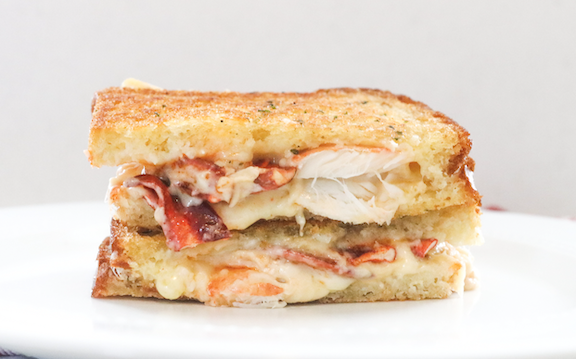

Lobster Grilled Cheese Sandwich

Ingredients:
- 8 slices sourdough bread
- 1 pound cooked lobster meat, chopped
- 3/4 cup shredded cheddar cheese
- 3/4 cup shredded gouda cheese
- 2 tablespoons chopped fresh chives
For the Sauce:
- 1/4 cup mayonnaise
- 2 tablespoons minced chipotle peppers in adobo sauce
- 1 tablespoon lime juice
- 2 cloves garlic, minced
Preparation:
- Preheat a waffle iron to medium-high heat. Lightly oil the top and bottom of the waffle iron or coat with nonstick spray.
- In a small bowl, whisk together mayonnaise, chipotle peppers, lime juice and garlic; set aside.
- Working in batches, place bread slices into the waffle iron. Top with lobster meat, cheeses, mayonnaise mixture and remaining bread slices.
- Close gently and cook until golden brown and crisp, about 3-4 minutes.
- Serve immediately, garnished with chives, if desired.
Home